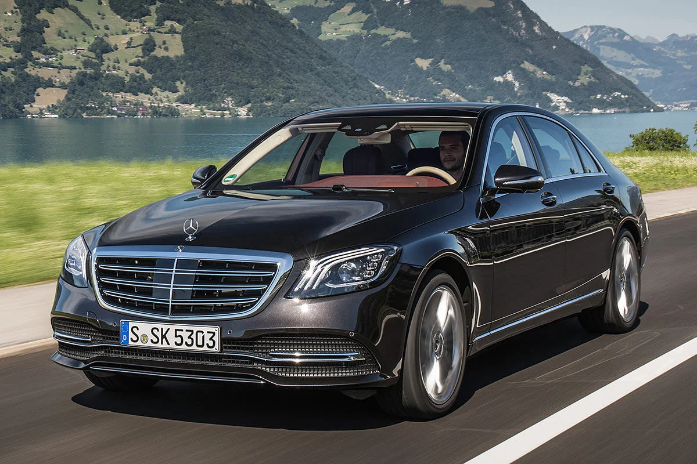
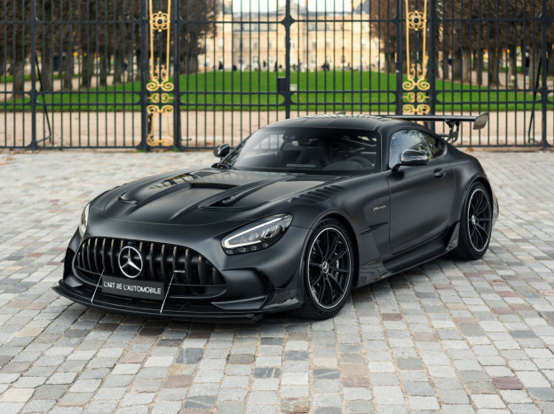

Mes modèles préférés
Voilà une liste de mes modèles préféré chez Mercedes, les modèles qui ont tant développer mon attirance envers cette marque et ceux qui m'ont fait rêver
Mercedes Classe S
La Mercedes Classe S représente pour moi le summum du luxe et du prestige, l’excellence de la marque à son plus haut niveau.
C’est une voiture qui symbolise la réussite, l’élégance et le confort absolu, et elle incarne le rêve ultime que j’ai toujours eu en tant qu’amateur de Mercedes.
Chaque détail, du design extérieur aux technologies embarquées, me fascine et me rappelle pourquoi j’admire tant cette marque. Posséder ou simplement voir une Classe S,
c’est ressentir un mélange d’émotion et d’ambition : elle est le reflet de ce que je veux atteindre et de la passion qui m’anime pour l’automobile.

Mercedes AMG GT
La Mercedes AMG GT Black Series est, selon moi,
le summum de la sportivité et de l’ingénierie allemande. Avec son design agressif et ses lignes sculptées,
elle impose le respect dès le premier regard. Chaque détail, du moteur surpuissant à l’aérodynamique affinée,
témoigne de la recherche ultime de performance. Ce modèle me fascine car il combine une puissance brute avec une précision extrême,
tout en conservant ce raffinement typique de Mercedes.
La GT Black Series incarne pour moi le rêve de vitesse et de contrôle absolu sur la route.

Mercedes CLasse CLS
Pour moi, le Mercedes CLS est la voiture la plus complète de la marque.
Le modèle W218, en particulier, a toujours été mon préféré. C’est celui qui m’a fait rêver pendant toute ma jeunesse,
avec son design élégant et sportif à la fois, son allure unique et son confort exceptionnel.
Chaque fois que je le voyais, je pouvais presque imaginer moi-même au volant, ressentir cette sensation de puissance et de raffinement typique de Mercedes.
Cette voiture symbolise pour moi l’équilibre parfait entre performance, style et émotion..

Mercedes GT63S 4 portes
La Mercedes AMG GT 63 S Coupé 4 portes est une voiture que j’apprécie énormément pour son équilibre entre sportivité extrême et confort luxueux.
Elle dégage une puissance impressionnante tout en offrant un confort quotidien surprenant pour un véhicule aussi performant,
ce qui la rend particulièrement fascinante.
Même si je l’adore, elle reste différente du CLS W218 : le GT 63 S est plus massif, plus musclé et encore plus agressif dans son design et ses performances,
tandis que le CLS conserve cette élégance et ce raffinement qui m’ont fait rêver depuis toujours.
J’aime cette voiture pour ce qu’elle est : une sportive ultra-puissante mais raffinée, complémentaire à mon coup de cœur pour le CLS.

Mercedes SLR McLaren
La Mercedes SLR McLaren est un véritable bijou de l’ingénierie et du design.
Ce modèle incarne la fusion parfaite entre performance extrême et élégance intemporelle.
Son allure unique et son moteur surpuissant m’ont toujours fasciné, représentant pour moi le rêve ultime d’une voiture d’exception.
Posséder ou admirer une SLR McLaren, c’est ressentir la puissance et le prestige de la collaboration Mercedes-McLaren à l’état pur.
 En savoir plus
En savoir plus